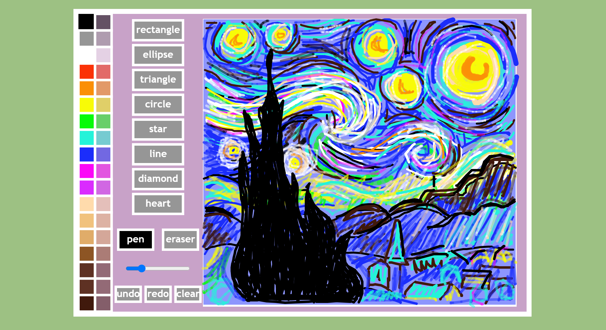

Project Plan

Initial Project Backlog

Sprint One
The aim of this sprint is for the user to draw any size of rectangle.
Rough Program Plan

Sprint One Board in progress

Basic Test of Program
Pushing to Git
Error
I recognised that my canvas' boundaries didn't allow the user to touch the drawing guide with the canvas boarder, and that the user wasn't able to continue drawing the shape if the boarder has already been touched. Preferably I would like the shape to cut off when touching the boarder of the canvas, or allow the user to continue drawing a shape elsewhere in one movement. I will fix this in a future Sprint, as currently I would like to get more shape and colour options before fixing the smaller details.
Reflection
This Sprint works well and achieves what I was after. It works very simply by only allowing the user to draw a guide and rectangles.
However this allows me to improve my program in future sprints, and has given me a variety of options for where I can improve my program. Through my testing I was able to recognise that there were lots of errors with my program as I mentioned above, such as the boarder of my canvas which will have to be fixed in a later sprint.
I would like to work on adding buttons and another shape in Sprint 2, as that will make my program more like a drawing program, by giving the user more options and more artistic freedom.
Sprint Two
The aim of Sprint Two is to allow the user to select either the ellipse or rectangle button, and then draw the shape accordingly.
Rough Program Plan
Sprint Two Board in progress

Basic Test of Program
Pushing to Git
Error
I struggled with the buttons creating different shapes, I realised this is because I was calling the shapes with capital letters, when I initially had them defined with lower case letters. This was a hard to find error, but super simple when I recognised what the problem was. I also had a few unnecessary lines of code that I was able to remove, this allowed me to find the error more efficiently.
Reflection
Sprint 2 was a big success, and I was able to get the basis for a good drawing program. Now the user is given choices and options, allowing for more creativity and freedom. This is crucial for a drawing program, so I prioritised including this feature over my other ideas on my kanban. I came across a few problems, however, the main one was actually getting the functionality to work, I had no trouble with the drawing guides, however it was difficult to have a button create a different shape. This was a simple fix, and showed me the importance of making sure I was properly calling parts of my code.
In my next sprint I really want to establish a way for the user to change the colour of shapes, to do this I was to have a swatch of variety of colours for the user to select, however, to simplify this, I may initially make only a few colour options.
Sprint Three
The aim of Sprint Three is to have a colour palate that the user can use to change the colour of the shapes.
Rough Program Plan

Sprint Three Board in progress

Basic Test of Program
Pushing to Git
Error
I came across an error where the first default colour was unable to be changed.
I recognised that my colour swatch had a hover colour and a different colour when selected, both of these colours were different to the initial colour
Reflection
...
Sprint Four
The aim of Sprint Four was to create a drawing area inside of the canvas and have boundaries that allow the user to draw up to the edge of the drawing area.
Rough Program Plan
Sprint Four Board in progress

Basic Test of Program
Pushing to Git
Error
I came across an error where the left side of my canvas had working boundaries, however, the right side did not. I realised this was because I had the program checking for the mouse in the wrong boundaries.
if(xMouse > x && yMouse < x+w && yMouse > y && yMouse < y+h)
I realised that I needed to change it to
if(xMouse > x && xMouse < x+w && yMouse > y && yMouse < y+h)
Now the code works and so do the boundaries.
Sprint Four Testing
I decided to create a separate testing folder for adding the drawing area, as I wanted to test the functionality without all of my additional buttons and shapes. This was beneficial as I had a much simpler code to use as a base, and allowed me to find and fix errors more efficiently. To do this I copied the code from my first sprint and added the drawing area code onto it, once it worked, I then added the new code onto my actual sprint.
Sprint Review
Sprint Five
This aim of Sprint Five is to allow the user to undo or redo previous shapes they may have drawn. This will give the user more freedom and allow them to make mistakes and still be able to recover their drawing.
Rough Program Plan
Sprint Four Board in progress

Basic Test of Program
Pushing to Git
Reflection
While my initial plan for this sprint was to create an undo and redo button, I decided to change my plan and make a clear button instead of a redo button. I am hoping to try and create a redo button in thr future, however, I realised this was too ambitious for sprint 5. A redo button would mean duplicating my shape list, so I would have to be able to go through the history on one list and have the other list actually representing what is on the canvas. I decided instead to make a clear button as the code was not too different to the undo button and because a clear option would be more helpful for users.
This was another decision in which I had to decide between two options to determine what would work best for my program. Where inevitably I had to consider practicality from not only the users perspective but also what I could manage in Sprint 5.
Sprint 5 went pretty smoothly, and I didn't face many problems. In my next sprint I am looking to add more shapes and colours to give the user more creative freedom.
Sprint Six
The aim of Sprint Six is to give the user more shape and colour options.
Rough Program Plan
Sprint Six Board in progress

Basic Test of Program
Pushing to Git
I came across an error ...
Reflection
Sprint Seven
The aim of Sprint Seven is to give the user more shape options, I also want to change the way the user selects a colour.
Rough Program Plan
Sprint Seven Board in progress

Basic Test of Program
Pushing to Git
I came across an error ...
Reflection
I made the choice in this sprint to change the way the colours appeared, prior they went transparent when hovered over or selected, which could give the user the wrong idea of what colour they were picking. This is why I decided to make them not only larger but have the stroke change instead, so the colour remained the same. This almost meant I could add transparent colours as an option.
Along with changing the appearance of the colours, I also changed the appearance of the program, I made it so the colours are on the far left side along with the buttons being in a line going downwards. This looks neater and also makes sense logically as we read from the left to the right.
The picture below shows what my program looks like now vs how it looked prior.

This sprint primarily went very smoothly, and I didn't have too many issues.
Sprint Eight
The aim of Sprint Eight is to give the user more shape options.
Rough Program Plan
Sprint Eight Board in progress

Basic Test of Program
Pushing to Git
I came across an error ...
Reflection
Sprint Nine
The aim of Sprint Nine is to have the option for the user to redo, as well as have a pen and eraser tool.
Rough Program Plan
Sprint Nine Board in progress

Basic Test of Program
Pushing to Git
I came across an error ...
Sprint Nine Testing
I decided to create a separate testing folder for adding the drawing area, as I wanted to test the functionality without all of my additional buttons and shapes. This was beneficial as I had a much simpler code to use as a base, and allowed me to find and fix errors more efficiently. To do this I copied the code from my first sprint and added the drawing area code onto it, once it worked, I then added the new code onto my actual sprint.
Reflection
Sprint Ten
The aim of Sprint Ten is to fix any errors in the previous sprint, and have a way of changing the thickness of the pen and eraser.
Rough Program Plan
Sprint Ten Board in progress

I had to make a decision about how I wanted the slider to appear on the canvas. I wanted this slider to be used for both the pen and eraser, so I had to think of a way the user could recognise its purpose.

I decided to choose the option on the right as it felt less cramped and made sense aesthetically. It did however mean that the buttons would be smaller than the others, although I ended up preferring them this way as it showed the different between the MouseDown shapes and then MouseUp drawing options.
Basic Test of Program
Pushing to Git
I came across an error ...
Reflection
Sprint Eleven
The aim of Sprint Eleven is to fix all errors and doctype my program.
Rough Program Plan
Sprint Eleven Board in progress
Basic Test of Program
Pushing to Git
I came across an error ...
Sprint Twelve
The aim of Sprint Twelve is to fix all errors, and test the program.
Rough Program Plan
Sprint Ten Board in progress

Basic Test of Program
Pushing to Git
I came across an error ...
Reflection
Reflection
I decided to put my program to the test and try to recreate Stary Night, and I think it turned out pretty sucsessful !!
What my Project Backlog looks like now